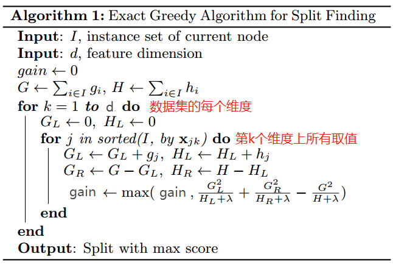

在文章GBDT中介绍了 Gradient、Booster、Gradient Booster 等一些基本理论推导，和一种Tree boosting算法-GBDT算法。 sklearn 也提供了 GBDT 的实现，我们可以方便的使用。 但是在生产环境中我们通常使用的是 Xgboost 这个工具提供的Tree boosting算法。在本文记录一下Xgboost中实现的Tree boosting的原理和其主要的应用， 如分类，回归，ranking。
Regression Tree Ensemble
Tree Ensemble 实际上可以理解为将 Gradient Booster(参考文章 GBDT) 中将每一步的模型(如弱分类器)换成回归树的一类模型。
Xgboost 中实现的 Tree Ensemble 算法和 GBDT 非常相似， 但也有所不同。我觉得在原理上是有所升级的。我们先从 Tree Ensemble 的目标函数出发，沿着其推导过程来看其改进之处。
Tree Ensemble 模型定义为 由 $K$ 个回归树相加组成的模型 ：
$$
\hat y_i= \sum_{i=1}^K f_k(x_i), f_k \in \mathcal F \tag 1
$$
其中: $\mathcal F$ 表示回归树的集合, 定义为:
$$
\mathcal F = \{ f(x) = w_{q(x)}\} (q: R^m \to T, w \in R^T) \tag 2
$$
简单解释一下上面的公式：
- $q$ 表示一个树的结构，其作用就是将一个具有 $m$ 维特征的 sample 映射到$T$个叶子节点上。即，$q: R^m \to T$ 。 $q(x)$ 表示叶子节点的序号。
- $w$ 是一个 $T$ 维向量，其每个维度对应树的一个叶子节点，表示回归树中每个叶子节点的取值。 $w_{q(x)}$ 表示样本 $x$ 在回归树上的预测值。
Tree Ensemble 的目标函数如下：
$$
\begin {align}
& obj = \sum_{i=1}^N l(y_i, \hat y_i) + \sum_{k=1}^K \Omega (f_k) \\
& where \Omega (f) = \gamma T + \frac 12 \lambda||w||^2
\end {align} \tag 3
$$
其中：
- 第一项 为 训练集上的损失函数(需要是可微的凸函数)。根据任务目标的不同，损失函数的定义也不同。如：
回归任务可以使用平方和损失函数 (Square loss) $ l(y_i, \hat y_i) = (y- \hat y_i)^2 $ ；
分类任务可以使用交叉熵损失函数；
rank任务使用 …… 这一个说来话长，后面再说吧。 第二项 为 模型正则项，它从树的结构和树的预测值两个方面对目标函数进行正则化
- $\gamma T$ 倾向于选择叶子节点少的回归树（结构简单）；
- $\frac 12 \lambda||w||^2$倾向于预测值稳定的树（预测值）。
即论文中所说的 Intuitively, the regularized objective will tend to select a model employing simple and predictive functions.
Gradient Boosting
如文章GBDT中所述 在 Gradient Boosting 中进行若干轮迭代计算，每一轮产生一个新的决策树和其对应的预测值。且，每一个新的决策树都是上一轮预测值的残差。那么怎么确定这颗新的决策树呢？本节推导第 $t$ 颗决策树的确定方法。
如下所示：
$$
\begin {align}
\hat y_i^{(0)} &= 0 \\
\hat y_i^{(1)} &= f_1(x_i) = \hat y_i^{(0)} + f_1(x_i) \\
\hat y_i^{(2)} &= f_1(x_i) + f_2(x_i) = \hat y_i^{(1)} + f_2(x_i) \\
\dots \\
\hat y_i^{(t)} &= \sum_{k=1}^t f_k(x_i) = \hat y_i^{(t-1)} + f_t(x_i) \\
\end {align}
$$
可以看出第 $t$ 轮的预测值是第 $t-1$ 轮的预测值 加上 一个新的决策树的预测值。那么这颗新的决策树怎么确定呢？虽然此处借鉴了梯度下降法的原理，可是我们却不能直接使用梯度下降法(如SGD)求解这颗新的决策树( since they are
trees, instead of just numerical vectors)。
我们的解决方法称为 Additive Training 即(Boosting)。回到我们的目标函数和第 $t$ 轮迭代时的预测值表达式 $\hat y_i^{(t)} = \sum_{k=1}^t f_k(x_i) = \hat y_i^{(t-1)} + f_t(x_i) $, 我们可以将目标函数表达如下:
$$
obj^{(t)} = \sum_{i=1}^N l(y_i, \hat y_i^{(t-1)} + f_t(x_i)) + \Omega (f_t) + constant \tag 4
$$
其中: $\sum_{i=1}^t \Omega (f_i) = \Omega (f_t) + \sum_{i=1}^{t-1} \Omega (f_i)= \Omega (f_t) + constant$, 对于第 $t$ 轮来说 前 $t-1$ 个决策树都是确定的，所以 $ \sum_{i=1}^{t-1} \Omega (f_i)$ 是一个常数。
所以第 $t$ 轮迭代时我们的目标函数中只有一个未知参数 $f_t(x_i)$ 即我们需要的决策树。 所以第 $t$ 个决策树只要能够使得上面的目标函数最小化就好了。
但是上面的目标函数还是有点复杂，能不能简化一点呢？ 当然，借助损失函数的二级泰勒展开式来近似损失函数。
回忆一下 二阶泰勒展开式：
$$
f(x + \Delta x) \approx f(x) + f’(x) \Delta x + \frac 12 f’’(x) \Delta x^2 \tag 5
$$
为了简化表示 定义如下两个符号:
$$
g_i = \frac {\partial l(y_i, \hat y_i )} {\partial \hat y_i }|_{\hat y_i^{(t-1)}} \\
h_i= \frac {\partial ^2 l(y_i, \hat y_i )} {\partial \hat y_i^2 }|_{\hat y_i^{(t-1)}} \tag 6
$$
note: 对于确定的损失函数(由任务目标决定) , 第 $t$ 轮迭代时以上两个值是确定值(常数)。
使用损失函数的二阶泰勒展开式近似的目标函数可以表示为：
$$
obj^{(t)} \approx \sum_{i=1}^N [l(y_i, \hat y_i^{(t-1)}) + g_i f_t(x_i) + \frac 12 h_i f^2_t(x_i)] + \Omega (f_t) + constant \tag 7
$$
对于第 $t$ 轮迭代, 上式中 $l(y_i, \hat y_i^{(t-1)})$ 也是常数项目，去掉常数项， 所以对于第 $t$ 轮迭代的目标函数可以进一步简化成下式：
$$
\tilde{\mathcal L}^{(t)} = \sum_{i=1}^N [ g_i f_t(x_i) + \frac 12 h_i f^2_t(x_i)] + \Omega (f_t) \tag 8
$$
通过上式对第 $t$ 步可能的候选决策树$f_t$进行打分，能够使 $\tilde{\mathcal L}^{(t)}$ 最小的一个 $f_t$ 就是这一步需要的决策树。
确定回归树预测值
本节先假设回归树的结构 $q$ 是确定的，推导回归树中每个叶子节点预测值 $\hat w$。
对于一个决策树 $q: R^m \to T, w \in R^T$ 来说，令 $I_j = \{ i | q(x_i) = j \}$ 表示所有映射到第 $j$ 个叶子节点的样本的集合。联合公式3 对正则化项的定义，公式 7 可以表示如下：
$$
\begin {aligned}
\tilde{\mathcal L}^{(t)} &= \sum_{i=1}^N [ g_i f_t(x_i) + \frac 12 h_i f^2_t(x_i)] + \Omega (f_t) \\
&= \sum_{i=1}^N [ g_i f_t(x_i) + \frac 12 h_i f^2_t(x_i)] + \gamma T + \frac 12 \lambda||w||^2 \\
&= \sum_{i=1}^N [ g_i f_t(x_i) + \frac 12 h_i f^2_t(x_i)] + \gamma T + \frac 12 \lambda \sum_{j=1}^Tw_j^2 \\
&= \sum_{j=1}^T [(\sum_{i \in I_j} g_i) w_j + \frac 12 (\sum_{i \in I_j} h_i) w_j^2 ] + \gamma T + \frac 12 \lambda \sum_{j=1}^Tw_j^2 \\
&= \sum_{j=1}^T [(\sum_{i \in I_j} g_i) w_j + \frac 12 (\sum_{i \in I_j} h_i + \lambda) w_j^2 ] + \gamma T \\
\end {aligned}
$$
令$G_j = \sum_{i \in I_j} g_i; H_j = \sum_{i \in I_j} h_i $ 上式可以表示为:
$$
\tilde{\mathcal L}^{(t)} = \sum_{j=1}^T [G_j w_j + \frac 12 (H_j + \lambda) w_j^2 ] + \gamma T \tag 9
$$
结合公式6 可以发现 $G_j, H_j$ 只与树结构 $q$ 有关。
回想上面我们对回归树的定义： $q$ 表示树的结构， $w$ 表示每个叶子节点上的预测值。打分公式 $\tilde{\mathcal L}^{(t)}$ 只与 $q$ 和 $w$ 有关。那么对于一个确定的树结构 $q$ ， 最优的叶子节点预测值 $w$ 可以表示为 ：
$$
\hat w_j = - \frac {G_j}{H_j + \lambda}
$$
$$
\begin {aligned}
\tilde{\mathcal L}^{(t)} &= - \frac 12 \sum_{j=1}^T \frac {G_j^2}{H_j + \lambda} + \gamma T \\
&= - \frac 12 \sum_{j=1}^T \frac {(\sum_{i \in I_j} g_i)^2}{(\sum_{i \in I_j} h_i) + \lambda} + \gamma T
\end {aligned} \tag {10}
$$
note: $ \hat w_j = - \frac {G_j}{H_j + \lambda}$ 是使公式8 取最小值的 $w$。
由公式 10 可以发现 对于一个结构确定的回归树 $q$，$\tilde{\mathcal L}^{(t)}$ 的取值与$w$ 是无关的。即，$\tilde{\mathcal L}^{(t)}$ 值与回归树的结构 q 有关, 所以论文中称公式10 为 structure score。即 a scoring function to measure the quality of a tree structure q.
所以只需要穷举所有可能的树结构 q ，求能够使的$\tilde{\mathcal L}^{(t)}$最小的一个 $q$ 即可。
但是，$q$ 有无穷个可能的取值。
确定的回归树结构
无论是决策树，回归森林还是GBDT，xgboost中的Tree boosting算法 都需要以超参的形式决策树的最大深度。在最大深度的限制下如果能确定每个节点的分裂条件，就能够确定一颗唯一的回归树结构 $q$。选取方法为：
- Start from tree with depth 0
- For each leaf node of the tree, try to add a split.
- 重复第二步，知道达到最大深度
完成以上三步，其实就枚举了所有可能的树结构，并选择一个能够使公式10取最小值的结构。其中关键问题在于第二步中怎么确定分割点。
公式10 其实就是类似与决策树中不纯度的定义。在xgboost确定回归树的结构的过程中，就是使用公式10来对树的叶子节点进行打分的。
令 $I_L$ 和$I_R$ 分别表示一个叶子节点分类后左边和右边节点的样本集合， $I = I_L \cup I_R$, 那么这一个分割点的打分公式表示如下：
$$
\begin {aligned}
gain &= \mathcal L - (\mathcal L_L + \mathcal L_R) \\
&= \frac 12 [\frac {(\sum_{i \in I_L} g_i)^2}{(\sum_{i \in I_L} h_i)} + \frac {(\sum_{i \in I_R} g_i)^2}{(\sum_{i \in I_R} h_i)} - [\frac {(\sum_{i \in I} g_i)^2}{(\sum_{i \in I} h_i)} ] - \gamma
\end {aligned} \tag {11}
$$
结合公式10 可以发现，$gain$越大，损失函数越小，跟个点选取的越好。所有我们只需要选取一个能使$gain$最大的一个分割点即可。xgboost中是穷举所有可能的分割点，即样本数据中每一维度的每一个样本值都作为候选分割点，选取gain最大的一个。

xgboost 提供了多种方法来求解分割点，上述方法称为 exact 方法，针对内存能够一次载入的数据集。其次还有approx方法(一种近似方法)， 和 hist方法(基于直方图的方法)。还有GPU版本。
其他方法参见原始论文。
Shrinkage and Column Subsampling
Shrinkage 和 Column Subsampling 是又一种处理过拟合问题的技术。
Shrinkage
shrinkage reduces the inuence of each individual tree and leaves space for future trees to improve the model.
即经过标准的tree boosting流程确定完一颗回归树以后，第 $t$ 步的预测值使用下式计算:
$$
\hat y_i^{(t)} = \hat y_i^{(t-1)} + \eta f_t(x_i)
$$
原理和梯度下降法中的学习率类似。
## Column Subsampling
如上文所述在确定决策树分割点时使用了所以特征的所有样本值计算 gain, 从中选取一个最好的。从计算量和过拟合问题的角度看，其实我们可以从所有特征中随机的抽取固定比例的特征(如 30%)作为候选特征。
包括如下三个参数： colsample_bytree, colsample_bylevel, colsample_bynode
与 GBDT 的不同点
我并没有看 原始 GBDT的实现细节，以下是我直接根 xgboost 的据论文和 文章 GBDT 的参考资料整理的 xgboost 和 原始 GBDT 的不同点，如果以后又机会了解更细节的内容再回来修改：
- 增加了模型正则项，GBDT算法中并没有使用正则化项；
- 除了正则化以外还使用了多种技术解决过拟合问题，如subsample，Shrinkage，Column Subsampling；
- 使用了二阶泰勒展开式近似目标函数，GBDT中使用的是直接使用的一阶梯度。即, 求解方式分别使用了牛顿法和梯度下降法